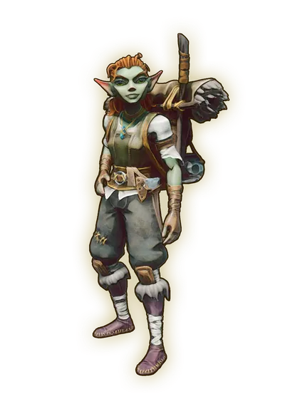

Rune Mysteries is the fourth primary quest where Zanik will teach you about runecrafting and magic.
Overview
- 50 ash logs
- 12 stones
- 10 rune essences
Walkthrough
Zanik wants you to learn the basics of crafting runes


Go east from Vannaka to the road to reach Zanik and speak to her.
She will tell you about magic and send you to gather some logs. Gather 50 ash logs, then talk to her again.
Rune crafting
Zanik will tell you about the Axtral Projection and how you can create runes. You'll get a stone pickaxe, with that, mine some rune essence from the rune essence geysers. You can mine the rocks on the ground around the geysers by using either ranged or magic weapons to strike them down. Gather 12 stones and 4 rune essence and build a rune altar, which can be found in the Building menu, under the Crafting tab.
Next, craft some air runes and astral runes.
Go back to Zanik and talk with her. She will send you to the Wise Old Man to start the Warding Off Danger quest.
Congratulations, quest complete!
Rewards
Required to Complete
This quest is required to complete the following quest(s):
This guide is the wiki's Rune Mysteries article, by its editors, reformatted for this site. Licensed CC BY-NC-SA 3.0.